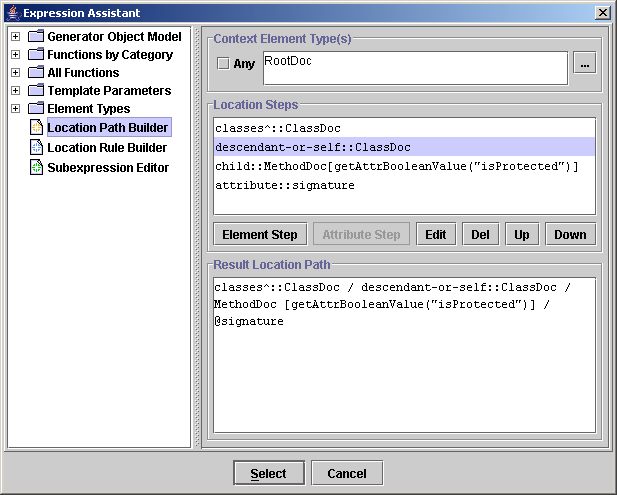

| Data Type | Java Class | Usage |
|---|---|---|
String |
java.lang.String |
string values |
Number |
java.lang.Number |
numeric values of all kinds (both integers and floats) |
Boolean |
java.lang.Boolean |
boolean values |
Object |
java.lang.Object |
any other values |
In addition to this, the FlexQuery processor recognizes
objects of Generator Object Model types (backed
by the corresponding Java classes of DocFlex API).
Those object types have registered their properties which can be accessed
using member operator (for example: element.id).
Some utility functions,
which can be used within FlexQuery scripts, may accept parameters or
return values of only specific Java classes
(e.g. java.lang.Object[] or java.util.Enumeration).
In such cases, those types are also tracked to ensure the parameters passed to a function
have correct types. (For that matter, there are special
conversion function,
which should be used to convert values from one specific type to another when necessary.)
| Data Type | Constants |
|---|---|
String |
Each string constant should start and end with the same single- or double-quote character,
for example: "blue" or 'green'.
If a quote character is not used as the string delimiter, it may appear inside the string: e.g.
The supported escape sequences are the following: The last one allows to specify any Unicode character encoded with the four hexadecimal digits. For example, '\u20AC' will represent Euro Sign '€'.
Note: Although internally, strings are represented by |
Boolean |
There are two boolean constants recognized in FlexQuery expressions:
true and false
|
Object |
Same as in Java, null keyword represents null reference. |
Currently, only assignment statements are supported. The assigned variables can be used within the statements following them.variable_1 = expression_1 ; variable_2 = expression_2 ; . . . result_expression
The last statement should be an expression returning the result value of the whole script.
| Category | Operators |
|---|---|
| Arithmetical | +, -, *, /, % |
| String concatenation | + |
| Number comparison | ==, !=, <, <=, >, >= |
| String and other types comparison | ==, != |
| Logical | !, &&, || |
| Conditional | cond ? expr1 : expr2 |
| Function call | func (args) |
| Property/method access | -> or . |
Note: Some utility functions are focused on processing of objects of some specific types, so they actually behave like methods of those objects. To make calls of such functions look in more method-like style, the first parameter of any function call may be moved before the function name separated with the property access operator '.' or '->'.
substring(str,1,5)
str.substring(1,5)
str->substring(1,5)
name = getParam("Name"); // comment
/* comment */When designing templates using DocFlex Template Designer, everywhere the FlexQuery-expressions may be specified, they are entered within special Expression Editors:
Such an editor is supplied with the “Check Expression” button (
 ) which allows to check if the entered
script is correct and the result data type it returns is appropriate to the given field.
) which allows to check if the entered
script is correct and the result data type it returns is appropriate to the given field.
Another button ( ) that appears in the editor is
the “Expression Assistant” button.
It invokes the FlexQuery Expression Assistant Dialog:
) that appears in the editor is
the “Expression Assistant” button.
It invokes the FlexQuery Expression Assistant Dialog:
This dialog provides a lot of information about everything that can be used in the expression:
Besides this, the Expression Assistant Dialog contains three additional tools:
This tool allows to easily construct element/attribute Location Paths of any complexity, which can be further used to specify parameters for such functions as findElementsByLPath(), getValuesByLPath().

As soon as the neccessary Location Path is ready, you can quickly insert it into the expression editor by clicking the “Select” button. The Location Path will be automatically converted into a valid string constant enclosed in quotes.
This dialog provides a convenient way for writing a definition of an Element Location Rule instantly encoded in the form of a LocationRule() function call, which is necessary to specify a parameter for findElementsByLRules() function:
By clicking the “Select” button, you can insert the prepared Location Rule definition into the expression editor.
This tool may help you to write and check the FlexQuery subexpressions you want to specify as a parameter for one of such functions: execSubquery(), generateVector(), filterElements(), findElementsByKey(), findElementsByLRules().
Once the subexpression is finished, you can quickly insert it into the editor of the main expression by clicking the “Select” button. The subexpression will be automatically converted into a valid string constant enclosed in quotes.